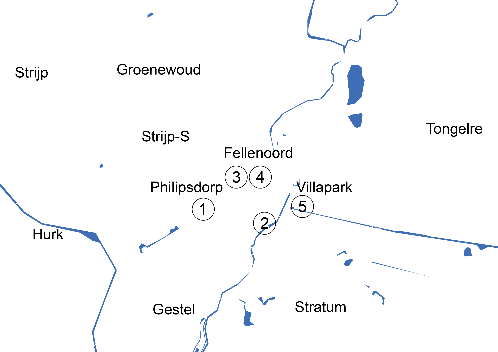

Walk between places is a walking tour with multiple sites to see and hear of Hallein, Austria in Eindhoven, The Netherlands. Walk between places is a research project exploring how information can be understood through materiality. At each site, the listener is encouraged to experience similar sounds and images of Hallein.
Site one: What is Hallein?
Go to Clausplein 4,
5611 XP Eindhoven
& listen to
Site two: Where is Hallein?
Go to Anne Frankplantsoen,
Eindhoven
& listen to
Site three: What does Hallein look like?
Go to Lichtplein,
Eindhoven
& listen to
Site four: Who makes up Hallein?
Go to 18 Septemberplein 4,
5611 AL Eindhoven
& listen to
Site five: How is the weather in Hallein?
Go to Kanaaldijk-Zuid 50,
5645 TA Eindhoven
& listen to
Map of Eindhoven, The Netherlands
